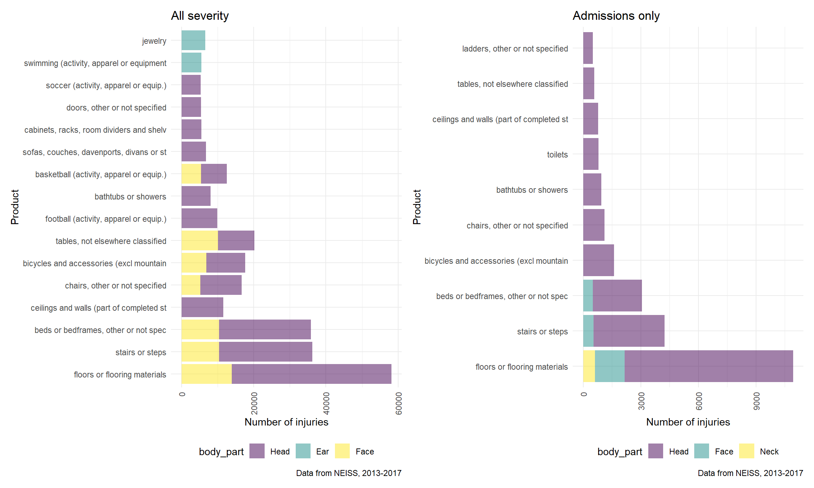

prod_headdf = neiss_df %>%
filter(body_part %in% c ("Head", "Face", "Neck", "Ear", "Eyeball"))
prod_headdf %>%
group_by(body_part, title) %>%
summarize(total = n()) %>%
arrange(desc(total))## `summarise()` regrouping output by 'body_part' (override with `.groups` argument)## # A tibble: 2,940 x 3
## # Groups: body_part [5]
## body_part title total
## <chr> <chr> <int>
## 1 Head floors or flooring materials 44220
## 2 Head stairs or steps 25817
## 3 Head beds or bedframes, other or not spec 25406
## 4 Face floors or flooring materials 13909
## 5 Head ceilings and walls (part of completed st 11519
## 6 Head chairs, other or not specified 11454
## 7 Head bicycles and accessories (excl mountain 10689
## 8 Face stairs or steps 10425
## 9 Face beds or bedframes, other or not spec 10412
## 10 Face tables, not elsewhere classified 10101
## # ... with 2,930 more rowsFrom this table, we can see that head injuries from floors or flooring materials make up the most common head/neck injuries, followed by stairs or steps and beds or bedframes. Next, we can see how these data compare when looking only at those injuries severe enough to cause a hospital admission.
all_severity = prod_headdf %>%
mutate(body_part = factor(body_part, levels = c("Head", "Ear", "Face","Neck","Eyeball"))) %>%
group_by(body_part, title) %>%
summarize(total = n()) %>%
mutate(title = fct_reorder(title, desc(total))) %>%
filter(total>5000) %>%
ggplot(aes(x=title, y= total, fill=body_part)) +
geom_col(alpha = .5)+
coord_flip() +
labs(title = "All severity",
x = "Product",
y = "Number of injuries",
caption = "Data from NEISS, 2013-2017")+
theme(axis.text.x = element_text(angle = 90, vjust = 0.5, hjust = 1))## `summarise()` regrouping output by 'body_part' (override with `.groups` argument)admissions_only = prod_headdf %>%
filter(disposition == "Admitted") %>%
mutate(body_part = factor(body_part, levels = c("Head", "Ear", "Face","Neck","Eyeball"))) %>%
group_by(body_part, title) %>%
summarize(total = n()) %>%
mutate(title = fct_reorder(title, desc(total))) %>%
filter(total>500) %>%
ggplot(aes(x=title, y= total, fill=body_part)) +
geom_col(alpha = .5)+
coord_flip() +
labs(title = "Admissions only",
x = "Product",
y = "Number of injuries",
caption = "Data from NEISS, 2013-2017")+
theme(axis.text.x = element_text(angle = 90, vjust = 0.5, hjust = 1))## `summarise()` regrouping output by 'body_part' (override with `.groups` argument) all_severity + admissions_only
From the graph above, we can see that the top 3 injuries continue to be floors, stairs, and beds and they are predominantly causing head injuries, and we can also clearly see that a substantial number of face injuries are also caused by those 3 materials. When looking at the differences between the two graphs, bicycles appear to cause more severe injuries than chairs and ceilings or walls, which are more common overall. In addition, toilets, which are not in the top products overall, appear to be more dangerous after looking at admissions. Overall, the more dangerous products appear to be frequently used furniture, while recreational items including sports like football, soccer, and swimming happen to account for a significant number of minor injuries. Perhaps most surprisingly, ladders, which one would associate with more head/neck injuries, are not in the top overall products and ranked 10/10 in the products leading to admissions.